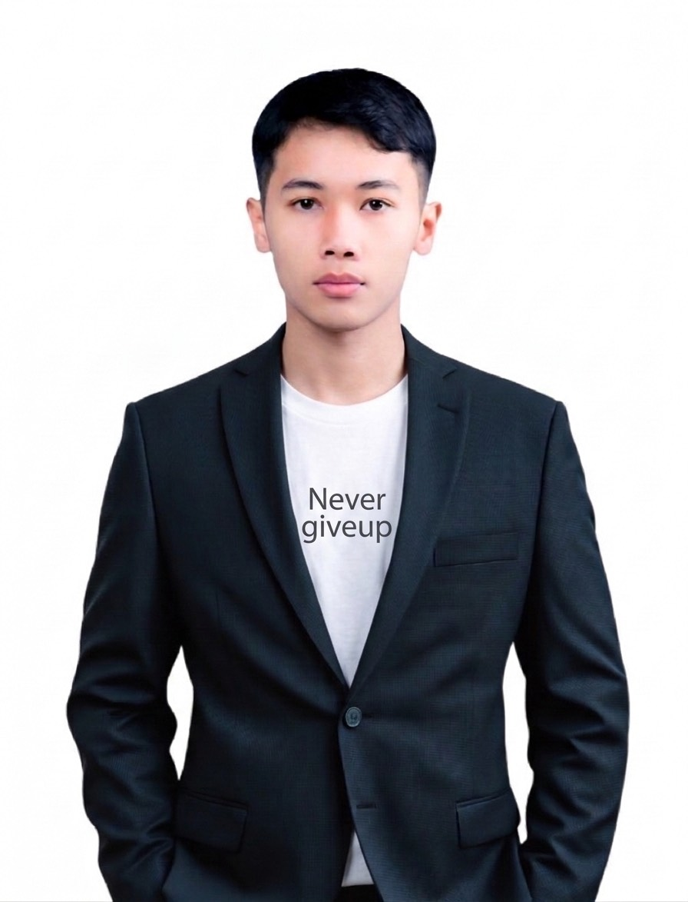

Hi, I'm Catawut Phormrin. A highly motivated professional blending Engineering acumen with Business Strategy. Proven track record in B2B acquisition, pricing optimization, and operational excellence. สวัสดีครับ ผม คฑาวุธ พรมรินทร์ ผู้เชี่ยวชาญที่นำทักษะเชิงวิเคราะห์แบบวิศวกรมาผสานกับกลยุทธ์ทางธุรกิจ มีผลงานโดดเด่นในการขยายฐานลูกค้า B2B การปรับโครงสร้างราคา และเพิ่มประสิทธิภาพการดำเนินงาน

Activities Director / Project Manager ประธานฝ่ายกิจกรรม / ผู้จัดการโครงการ
Led Academic Club activities, organized 4 CSR camps. Renovated Wat Khao Chong Lab School and reforested wildlife sanctuary. ผู้นำจัดกิจกรรมชมรมวิชาการ และค่ายอาสาพัฒนา 4 แห่ง (ปรับปรุงโรงเรียนวัดเขาช่อง, ปลูกป่า ณ เขตรักษาพันธุ์สัตว์ป่าแม่น้ำชี ฯลฯ)
Seoul International Invention Fair: Recognized for innovation in machine design. งานประกวดนวัตกรรมนานาชาติ ณ กรุงโซล: ได้รับรางวัลจากผลงานการออกแบบเครื่องจักร
Young Scientist Competition: Developed wood replacement material from bagasse. พัฒนาวัสดุทดแทนไม้จากชานอ้อย ยางพารา และซิลิกา เพื่อเพิ่มประสิทธิภาพการใช้งาน
Tap on any tool to view details. แตะที่โลโก้เพื่อดูรายละเอียดการใช้งาน
I am currently open to new opportunities. Let's connect! ปัจจุบันผมเปิดรับโอกาสใหม่ๆ ในการทำงาน สามารถติดต่อพูดคุยกันได้เลยครับ